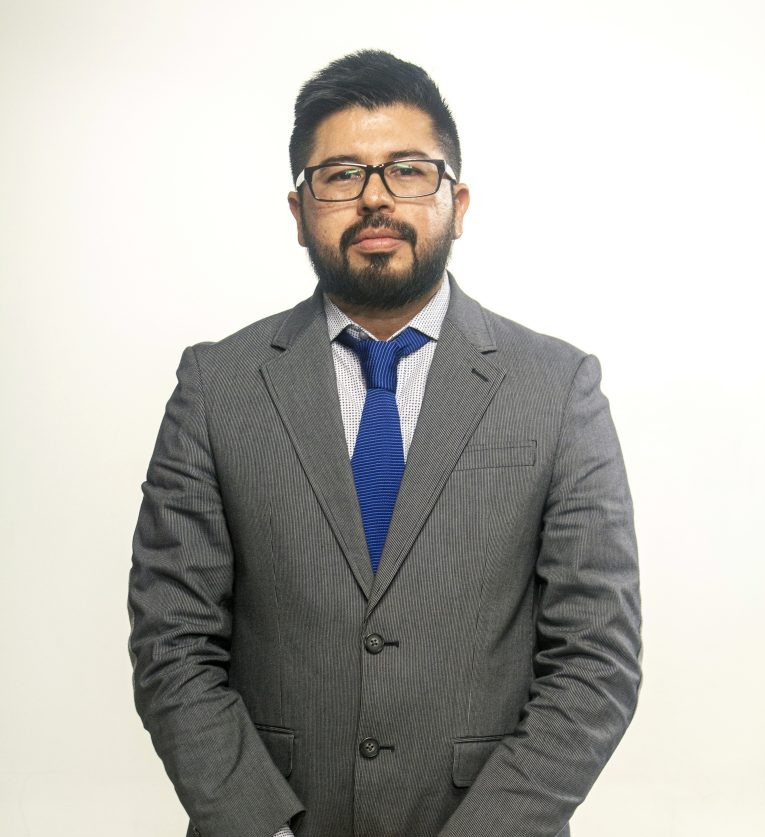
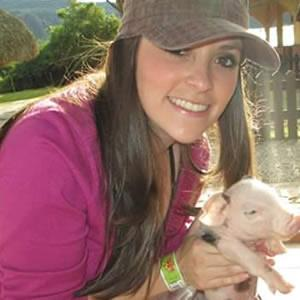

Decano


Jordano Salamanca Bastidas
Decano de la Escuela de Ciencias Agrícolas, Pecuarias y del Medio Ambiente - ECAPMA.

Decano de la Escuela de Ciencias Agrícolas, Pecuarias y del Medio Ambiente - ECAPMA.

Médica Veterinaria, MSc. Salud Animal de la Universidad Nacional de Colombia. Línea de profundización en Virología Animal.

Zootecnista universidad UNAL · Especialista en Mercadeo universidad ICESI · Magister en Agronegocios universidad UNAD
Médico Veterinario Zootecnista · Esp. Pedagogía para el Desarrollo del Aprendizaje Autónomo · MSc. Ciencias Pecuarias (Ecofisiología y Ganadería Ecológica) · Diplomado Gestor de Curso en Ambientes Virtuales.
Médico Veterinario Zootecnista de la Universidad Pedagógica y Tecnológica de Colombia · Agrónomo y estudiante de la Maestría en Geoinformación del Territorio de la Universidad Nacional Abierta y a Distancia (UNAD).
Estudiante de Doctorado en Educación - UTEL México (En curso) · Magister en Educación y Docencia – UTEL México · Especialista en Nutrición Animal - Universidad Nacional Abierta y a Distancia · Medico Veterinario - IUDC (En curso) · Zootecnista - Universidad Nacional de Colombia sede Bogotá
Evaluar idoneidad y trayectoria del equipo formulador del programa.
Hojas de vida (CvLAC) y soportes de experiencia disciplinar.